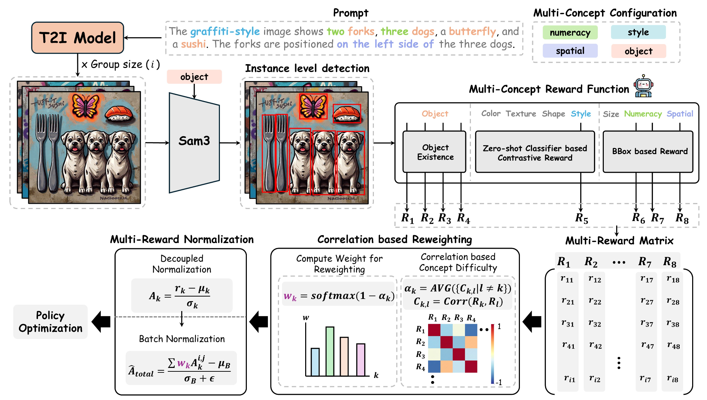
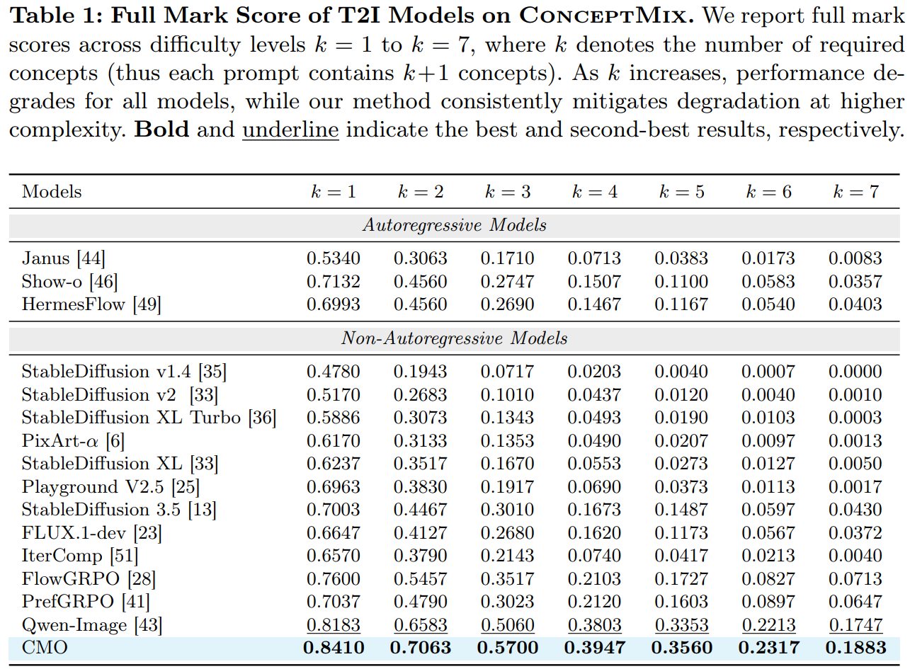
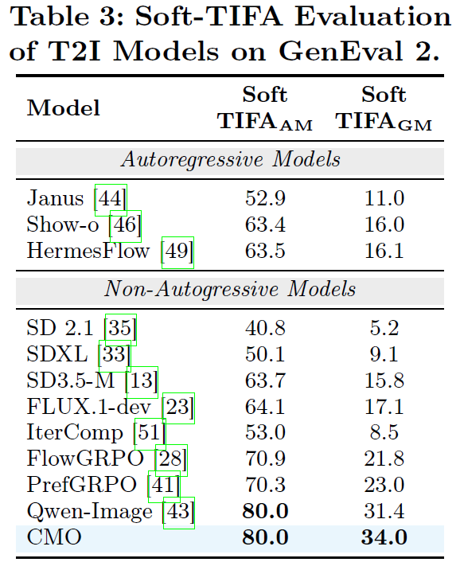
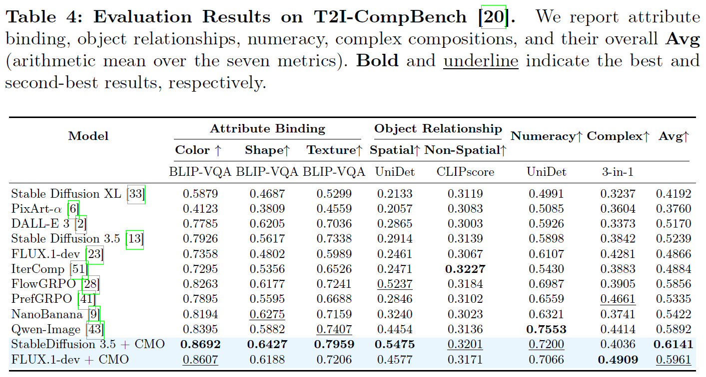

Soft TIFAGM, improving prompt-level correctness.
ECCV 2026
Compositional Text-to-Image Generation
Correlation-Weighted Multi-Reward Optimization for Compositional Generation
CMO dynamically reweights fine-grained concept rewards using reward correlations, emphasizing hard-to-satisfy and conflicting concepts during diffusion RL fine-tuning.
1Korea University
2Korea Institute of Science and Technology
Core idea
Reward interactions reveal compositional difficulty.
Instead of averaging rewards equally, CMO estimates which concepts conflict across generated samples and gives them stronger optimization signals.
Best average score with SD3.5 + CMO.
Full Mark at the hardest K = 7 level.
LoRA fine-tuning setup for SD3.5 and FLUX.1-dev.
Abstract
Balancing many rewards without letting easy concepts dominate.
Text-to-image models have improved substantially, yet dense compositional prompts still often result in partial success: the model may generate the correct objects while missing the requested count, attribute, or spatial relation.
CMO addresses this challenge by decomposing prompts into concept-level rewards and estimating the correlation structure among them across generated samples. Concepts that are negatively correlated or inconsistently satisfied receive higher weights, guiding reward optimization toward simultaneous concept satisfaction.
01
Fine-grained reward decomposition for objects, attributes, numeracy, size, and spatial relations.
02
Correlation-based difficulty estimation that detects hard-to-align concept interactions.
03
Consistent improvements on ConceptMix, GenEval 2, and T2I-CompBench with SD3.5 and FLUX.1-dev.
Method Overview
Correlation-weighted multi-reward optimization
CMO converts a multi-concept prompt into a reward matrix, estimates concept conflicts through correlations, and aggregates normalized advantages with adaptive concept weights.

Decompose prompts
Extract objects, attributes, numeracy, size, and spatial relations as independent concept objectives.
Build reward matrix
Evaluate a group of generated images with dedicated reward functions to obtain concept-wise rewards.
Estimate difficulty
Compute correlations between rewards; weakly or negatively correlated concepts are treated as harder.
Optimize policy
Reweight normalized advantages so the model focuses on jointly satisfying difficult concepts.
Quantitative Results
Stronger compositional generation across strict benchmarks
CMO improves exact multi-concept success, prompt-level Soft-TIFA, and fine-grained attribute binding.
ConceptMix
Full Mark Score across task complexity

GenEval 2
Soft-TIFA evaluation

T2I-CompBench
Attribute binding, relationships, numeracy, and complex composition
Avg. 0.6141

Image Visualization
Qualitative comparisons
Following the quantitative sections, the final section shows generated images across compositional prompts and increasing concept complexity.


Citation
BibTeX
@article{wi2026cmo,
title = {Correlation-Weighted Multi-Reward Optimization for Compositional Generation},
author = {Wi, Jungmyung and Kim, Hyunsoo and Kim, Donghyun},
journal = {arXiv preprint arXiv:2603.18528},
year = {2026}
}